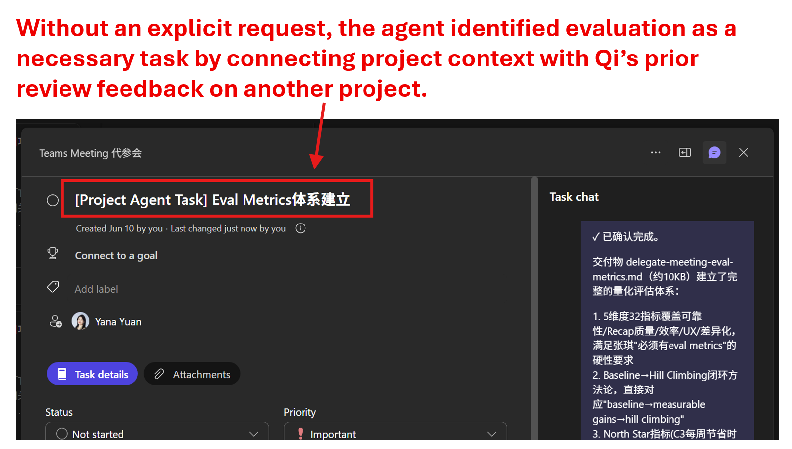
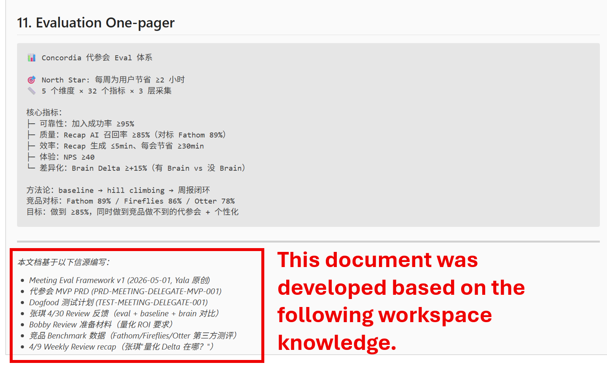
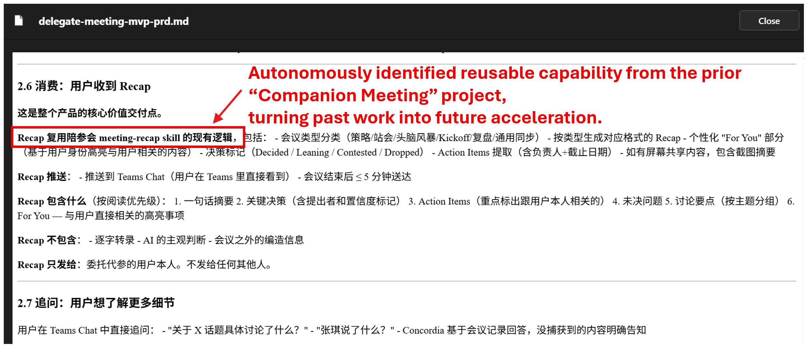

Aha Moment #1
Proactive Task Discovery from Shared Project Context
Project Agent identified that Delegate Meeting should include an evaluation track, based on prior leadership expectations observed in adjacent reviews,
even when the requirement was not explicitly assigned to this project. It generated the objective, value statement, and delegated execution.

Aha #1 evidence — proactive task discovery from project-level context
Aha Moment #2
Context-Rich Execution Quality
During evaluation plan authoring, Member Agent reused relevant project context from workspace (prior discussions, constraints, expectations, and outputs),
resulting in an evaluation proposal better aligned with team standards and review expectations.

Aha #2 evidence — workspace-informed execution quality
Aha Moment #3
Project Compounding via Skill Reuse
Agent autonomously recognized and reused the existing Meeting Recap capability from prior Companion Meeting work when designing Delegate Meeting space.
This demonstrates compounding intelligence: the more project memory in workspace, the stronger future judgments become.

Aha #3 evidence — compounding intelligence via reusable capabilities